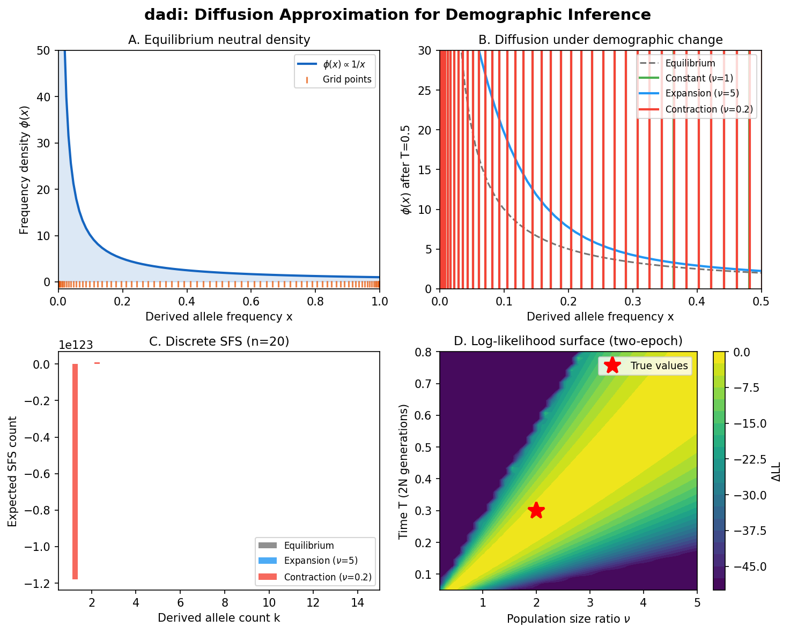

Overview of dadi
Before assembling the watch, lay out every part and understand what it does.
{kind=link}

dadi at a glance. The diffusion approximation for demographic inference: the frequency grid discretising allele frequency space, the equilibrium SFS density under the Wright-Fisher diffusion, PDE evolution of the allele frequency distribution under different population sizes, and the resulting discrete SFS used for likelihood computation.
What Does dadi Do?
Given DNA sequence data from one or more populations, dadi infers the
demographic history that produced the observed patterns of genetic variation.
Concretely, dadi asks: What history of population size changes, splits,
and migrations would produce a frequency spectrum that looks like the one we
observe? The same question as moments – but answered by solving a
partial differential equation rather than a system of ODEs.
The Big Picture: Why Solve a PDE?
The allele frequency distribution in a population is governed by the Wright-Fisher diffusion equation – the continuous-time, continuous-frequency limit of the Wright-Fisher model. This PDE describes how the density of allele frequencies \(\phi(x, t)\) evolves under the forces of drift, mutation, selection, and migration:
If you can solve this equation for a given demographic model, you can compute the expected allele frequency density at the present. From that density, you extract the expected SFS. From the expected SFS, you compute a likelihood. And from the likelihood, you optimize to find the best-fit demographic parameters.
This is the classical approach to SFS-based inference, and dadi was the
first tool to implement it for joint multi-population spectra (Gutenkunst
et al. 2009). The key insight was that the diffusion equation, despite being a
PDE, can be solved efficiently enough for demographic inference – especially
with a cleverly designed nonuniform frequency grid and Richardson extrapolation
to remove grid bias.
Why did moments bypass the PDE?
If the PDE approach works, why did moments (Jouganous et al. 2017)
bother deriving moment equations? Two reasons:
Grid scaling. For \(P\) populations with \(n\) grid points each,
dadineeds \(n^P\) grid points. For 3 populations with 50 grid points, that’s 125,000 points.momentsreplaces the grid with the SFS entries themselves, scaling as \(\prod n_i\) where \(n_i\) are sample sizes – typically much smaller.Grid artifacts. Finite-difference schemes introduce numerical diffusion. Richardson extrapolation mitigates but doesn’t eliminate this.
momentshas no grid, so no grid artifacts.
But dadi has its own advantages: the PDE view makes selection natural,
the frequency density \(\phi(x,t)\) is a physically meaningful object,
and dadi’s mature codebase offers features (DFE inference, ancestral
misidentification correction, Demes integration) that build naturally on
the diffusion framework.
Terminology
Before diving into the gears, let’s nail down the terminology.
Term |
Definition |
|---|---|
\(\phi(x, t)\) |
Allele frequency density: the expected number of segregating sites with derived allele frequency \(x\) at time \(t\) |
SFS |
Site Frequency Spectrum: histogram of derived allele counts in the sample, obtained from \(\phi\) by binomial sampling |
Grid |
The set of frequency points \(0 < x_1 < x_2 < \cdots < x_n < 1\) on which \(\phi\) is discretized |
Extrapolation |
Richardson extrapolation: running at multiple grid sizes and extrapolating to the \(n \to \infty\) limit |
\(n\) |
Haploid sample size (number of chromosomes) |
\(\theta\) |
Population-scaled mutation rate: \(4N_e \mu\) |
\(N_e\) |
Effective population size |
\(\nu\) |
Relative population size: \(N(t) / N_{\text{ref}}\) |
\(T\) |
Time, measured in units of \(2N_e\) generations |
\(\gamma\) |
Population-scaled selection coefficient: \(2N_e s\) |
\(h\) |
Dominance coefficient (default 0.5 = additive/genic selection) |
\(M_{ij}\) |
Scaled migration rate from population \(j\) into population \(i\) |
pts |
Number of grid points used for the frequency grid (a |
The Key Innovation: Multi-Population Diffusion
Before dadi, the Wright-Fisher diffusion had been solved numerically for
single populations (Williamson et al. 2005). dadi’s breakthrough was
extending this to joint multi-population spectra – solving a
\(P\)-dimensional PDE where each dimension corresponds to one population’s
frequency axis.
For two populations, the density \(\phi(x, y, t)\) tracks the joint
distribution of allele frequencies in both populations simultaneously. Drift
acts independently in each dimension, but migration couples the populations.
Population splits are handled by slicing the density array (via PhiManip),
and admixture events remap frequencies via Dirac delta operations.
This multi-dimensional approach made dadi the first tool capable of fitting
complex demographic models (isolation-with-migration, secondary contact,
admixture) to the joint SFS from two or three populations.
dadi vs. moments: Two Paths to the Same Dial
dadi and moments are best understood as two different watchmaking
philosophies applied to the same problem:
dadi’s approach (PDE):
Start with equilibrium density phi(x)
|
v
Solve diffusion PDE on frequency grid
(drift, selection, mutation, migration)
|
v
Extract SFS from phi via binomial sampling
|
v
Compare to observed SFS via likelihood
moments’ approach (ODE):
Start with equilibrium SFS
|
v
Integrate moment equations (ODEs)
(drift, selection, mutation, migration)
|
v
Model SFS entries directly
|
v
Compare to observed SFS via likelihood
dadi models the full gear profile (the continuous density \(\phi(x,t)\))
and reads the hand positions from it. moments writes equations for the hand
positions directly, never constructing the full gear profile. Both watches tell
the same time; the mechanism differs.
Parameters
dadi takes the following parameters:
Parameter |
Symbol |
Meaning |
|---|---|---|
Mutation rate |
\(\theta = 4N_e\mu\) |
Population-scaled mutation rate per site |
Selection coeff. |
\(\gamma = 2N_e s\) |
Population-scaled selection coefficient |
Dominance |
\(h\) |
Heterozygote effect relative to homozygote (default 0.5 = additive) |
Population sizes |
\(\nu_i(t)\) |
Relative sizes as functions of time |
Migration rates |
\(M_{ij}\) |
Scaled migration matrix entries |
Integration time |
\(T\) |
Duration of each epoch in \(2N_e\) generations |
Grid points |
pts |
Number of frequency grid points (controls numerical resolution) |
The first six parameters are shared with moments. The last – grid points
– is unique to dadi and reflects its PDE-based approach. More grid points
means higher accuracy but slower computation, and Richardson extrapolation
across multiple grid sizes removes the leading-order grid bias.
The Flow in Detail
Here’s how the pieces connect for a typical inference with dadi:
1. Parse VCF -> compute observed SFS
|
v
2. Define demographic model function
(e.g., two_epoch, isolation_with_migration)
|
v
3. Wrap model with extrapolation:
func_ex = Numerics.make_extrap_func(model_func)
|
v
4. For candidate parameters theta:
+---> Compute equilibrium phi (PhiManip.phi_1D)
| |
| v
| Build frequency grid (Numerics.default_grid)
| |
| v
| Integrate diffusion PDE through
| demographic epochs (Integration.one_pop,
| two_pops, etc.)
| |
| v
| Extract SFS from phi (Spectrum.from_phi)
| |
| v
| Richardson extrapolation over grid sizes
| |
| v
| Compute composite log-likelihood
| |
+----- Optimizer (BFGS) updates parameters
|
v
5. Return best-fit parameters
+ Godambe uncertainty estimates
In watch terms: Step 1 reads the current hand positions (the observed SFS). Step 2 blueprints the gear train (the demographic model). Step 3 adds a self-correcting mechanism (extrapolation) that cancels grid artifacts. Step 4 winds a candidate watch, reads its predicted hand positions, and compares them to the observed ones. Step 5 reports which gear sizes (demographic parameters) make the predicted dial match the real one most closely.
Reference
Gutenkunst RN, Hernandez RD, Williamson SH, Bustamante CD (2009). Inferring the joint demographic history of multiple populations from multidimensional SNP frequency data. PLoS Genetics, 5(10): e1000695.
Ready to Build
You now have the high-level blueprint. In the following chapters, we’ll build each gear from scratch:
The Diffusion Equation – The PDE: the Wright-Fisher diffusion and how
dadisets up the equation with all its terms. This is the escapement – the fundamental equation that generates the ticking.Numerical Integration – The solver: finite differences, nonuniform grids, and Richardson extrapolation. This is the gear train – the engineering that turns a continuous equation into a computable answer.
Demographic Inference – The optimization: composite likelihood, BFGS, and Godambe uncertainty. This is the mainspring – the machinery that adjusts parameters until the predicted dial matches observation.